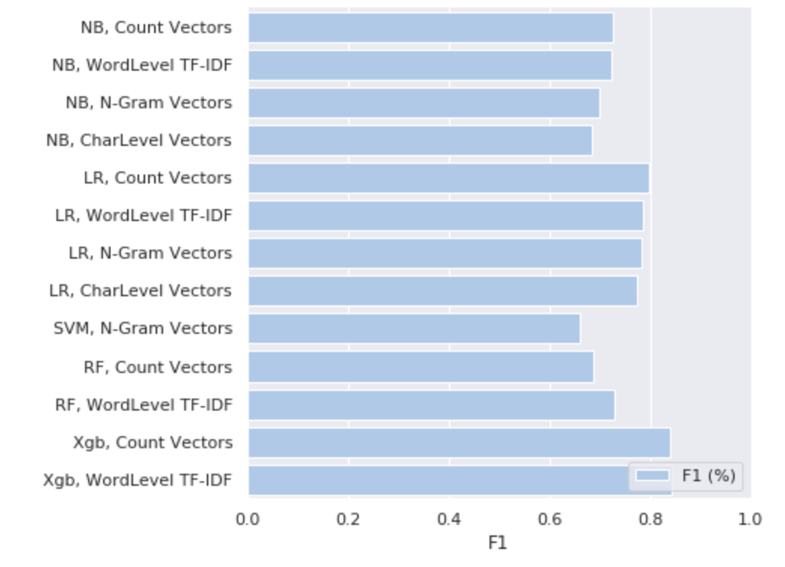
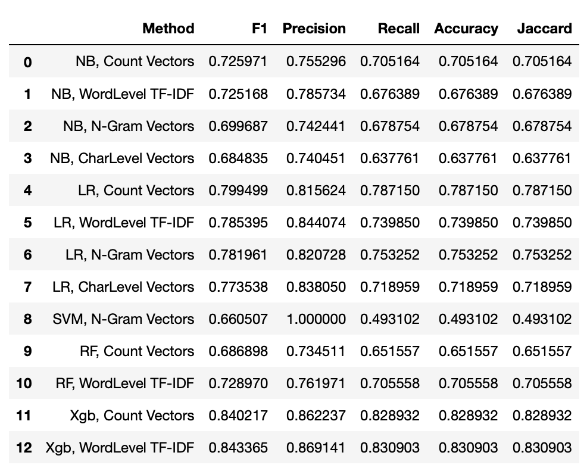

Over the past five years, the World Economic Forum identified digital misinformation as one of the top ten global risks. The spread of false information has become an increasingly prominent topic of global public concern. Although misinformation, disinformation and propaganda have been used throughout history to influence public opinion — the tectonic shifts in the online news ecosystem raises concerns about the vulnerability of democratic societies to the proliferation of misinformation. While a significant body of recent research has been done to classify news articles as misinformation, disinformation or fake news, there is a paucity of research on understanding the underlying associations for why an article may be deemed as “fake” or misinformation. This capstone project aims to fill this gap by providing an objective and alternate approach to “fake news” by building a classification model to predict corrections and retractions in news articles.
This project uses natural language processing (NLP) methods (Count vectors, TF-IDF, word embeddings and topic modeling) to extract textual features. I utilized classification methods (logistic regression, naive bayes, support vector machine, random forests and extreme gradient boosting) to build a predictor of retracted and corrected articles. The text pre-processing, model training and testing was performed in a Python environment. The textual information was derived from a text corpus and is represented as feature vectors, which was inputted into a classifier.
I collected news articles and their metadata from the GDELT database (Global Database of Events Language and Tone) to train and test the classification models.
Source:
Sample:
Each news article has been put into 4 categories: Major correction, minor corrections, updated articles, and no corrections.
Each article is treated as a document, and the text is cleaned through the following pipeline:
This method represents words and documents using a dense vector representation. I used a pre-trained embedder trained by fasttext on all text from Wikipedia 2017. First I downloaded the pre-trained word embedding vector, then I created a tokenizer object and transformed the text documents to sequence of tokens and padded them.
I used topic modelling to identify the groups of words from the corpus. I used Latent Dirichlet Allocation to generate the features. I started with a fixed number of topics. The probability distributions over the words from the topics provided insight into the different themes in the documents.
Once the feature engineering was completed, I trained a classifier using the features created during the feature engineering phase. I implemented the following different classifiers: 1) Logistic Regression 2) Naive Bayes Classifier 3) Support Vector Machine 4) Random Forests 5) Xtreme Gradient Boosting.
In order to extract relevant textual features, I transformed the data into feature vectors. I used count vectors, TF-IDF, word embeddings and topic modeling to extract features from the dataset. Below is an overview of each feature engineering method
To implement this matrix notation of the dataset in Python, I created a count vectorizer object, which transformed the training and test data.
The TF-IDF score represents the relative importance of a term in the document and corpus. The TF-IDF vectors were generated at the word level, n-gram level and the character level
I found that Xtreme Gradient Boosting has the highest accuracy at 82%. Additionally, I found that more articles get updated for events that happen earlier in the day. Articles with the phrase “spokesman said” do not get corrected. Further analysis will be completed to identify trends in the data and improve accuracy.


Technical Details